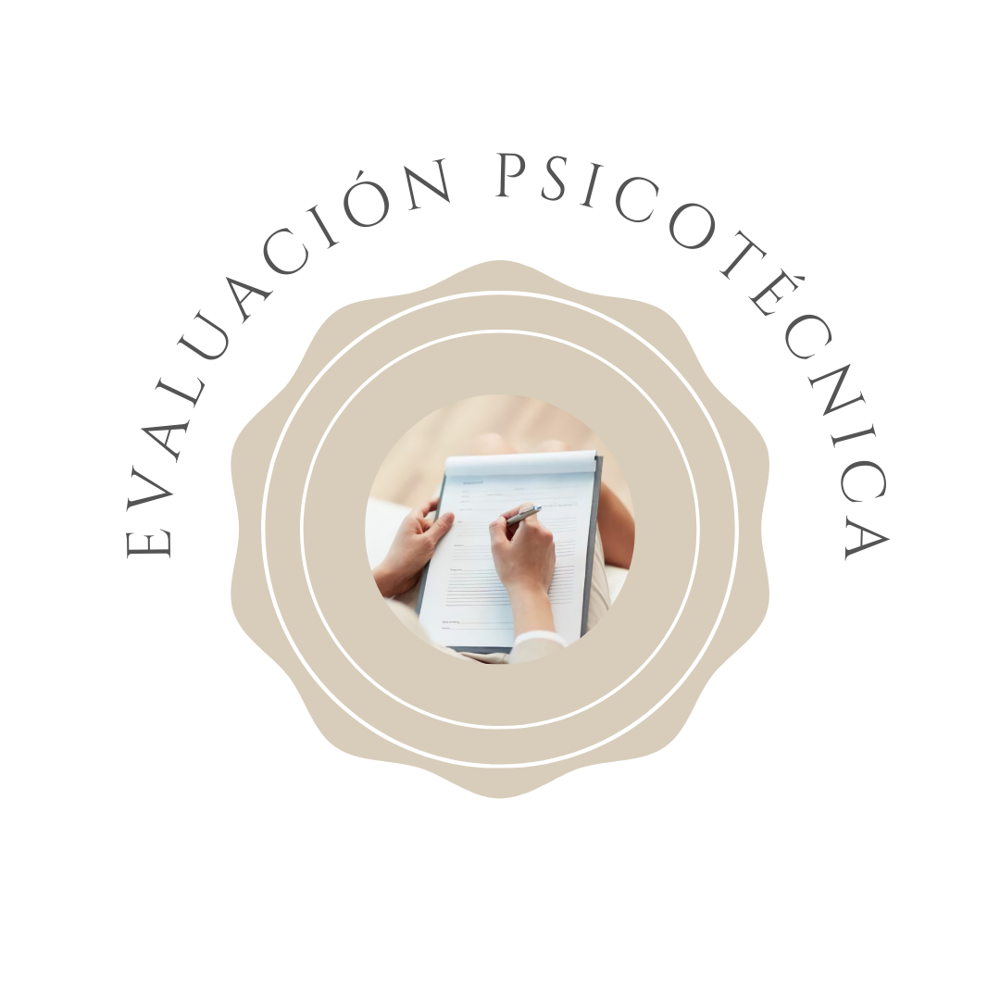
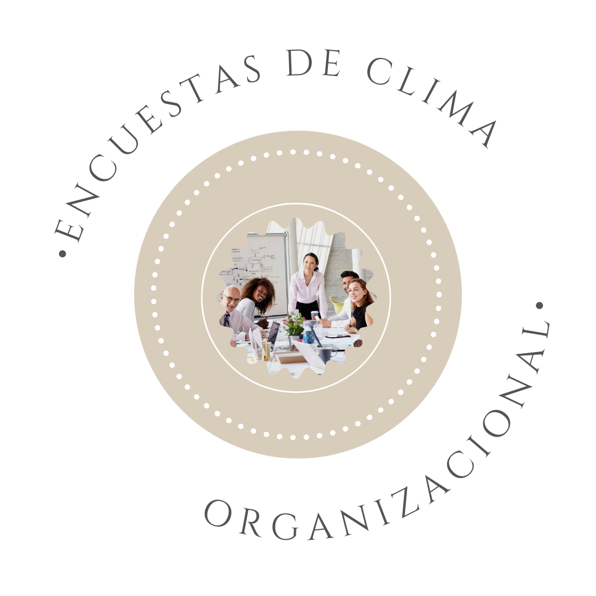
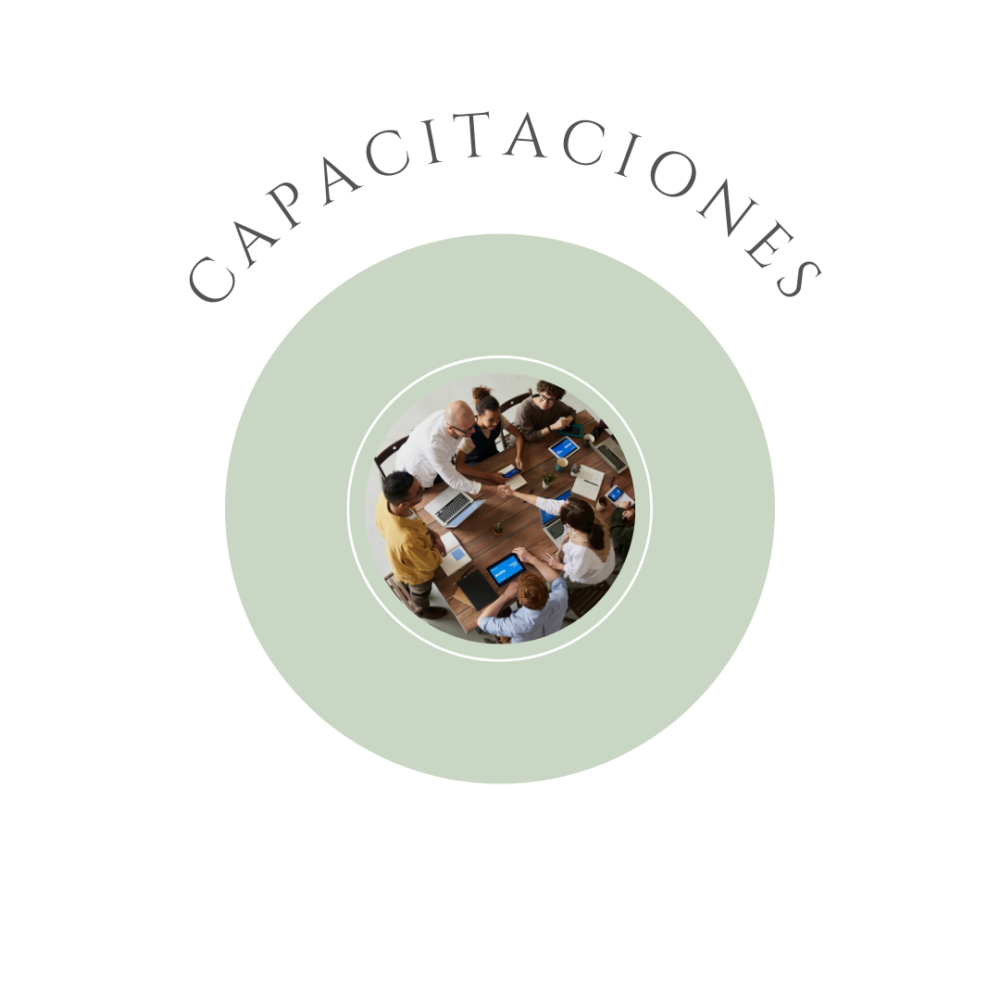

¿Sabías que podés acceder a nuestros servicios desde cualquier punto del país?
Ofrecemos nuestros servicios de forma presencial, semipresencial o remota en Mar del Plata y alrededores.
También, remota para toda la Argentina.
¡Adaptamos cada uno de ellos a las distintas modalidades asegurando resultados de eficacia y calidad profesional!

El Diagnóstico Organizacional refiere a un proceso que permite obtener un recorte de la organización a fin de evaluar la situación en la que se encuentran determinadas variables - tales como su productividad, rotación de personal, satisfacción en el trabajo, entre otras - con el objetivo de advertir diferentes problemáticas y aspectos de mejora. Mediante la misma, se proponen intervenciones que tiendan a resolver situaciones y favorecer aspectos a fin de incrementar la efectividad y el bienestar organizacional.

Refiere al proceso de ingreso o integración del capital humano a las organizaciones.
La Búsqueda implica abastecer al proceso de selección de candidatos que posean los requerimientos mínimos del puesto vacante.
Por su parte, la Selección de Personal remite a la comparación del perfil del candidato con el perfil del puesto y de la empresa. Mediante diferentes técnicas - tales como primeras entrevistas, entrevistas por competencias, Assessment Center, entrevista psicotécnica, entre otras - se busca y evalúa al perfil más idóneo a fin de que se pueda adecuar de manera eficaz y eficiente a determinado puesto y organización.

La Evaluación Psicotécnica remite a una instancia del proceso de selección de personal, caracterizada por la administración de psicotécnicas estandarizadas, propias del ámbito de la Psicología. Permite analizar y evaluar las conductas, capacidades y habilidades de los candidatos en función del perfil del puesto y la empresa.

La Evaluación por Competencias comprende una instancia del proceso de selección de personal que consiste, generalmente, en una entrevista a fin de evaluar distintas competencias. Estas últimas son características de personalidad devenidas en comportamientos, que al evaluarlas permiten obtener información para inferir el desempeño laboral de un candidato para determinado puesto de trabajo. Asimismo, esta evaluación permite identificar el grado de desarrollo de las competencias propias de cada candidato y su potencial de crecimiento.

La Evaluación de Desempeño permite apreciar de forma sistemática cómo cada miembro de determinada organización se desempeña en un puesto de trabajo y advertir su potencial de desarrollo futuro.
Mediante la Evaluación de Potencial, se conocen las capacidades y habilidades de una persona para desempeñarse en otro puesto, cargo o sector de mayor jerarquía dentro de determinada estructura organizacional. Permite inferir la capacidad máxima de trabajo actual de una persona y deducir su potencial hacia el futuro.

La Descripción y Análisis de Puestos comprende un proceso que permite definir los aspectos intrínsecos y extrínsecos de determinado puesto. Es decir, las tareas que desempeña el ocupante del mismo, y los requisitos y las exigencias que debe poseer a fin de llevar a cabo adecuadamente las responsabilidades que le competen.
Determinar el perfil del ocupante de un puesto servirá de guía para la búsqueda y selección de personal y para los candidatos. Asimismo, permitirá definir programas de formación, planes de carrera y capacitación, entre otras cuestiones.

Las Encuestas de Clima Organizacional son herramientas que permiten comprender cómo cada uno de los empleados o colaboradores encuestados perciben la realidad laboral.
Posterior a su administración y análisis de resultados y, en consonancia con los mismos, se podrá diagramar e implementar determinada intervención a fin de favorecer cambios apropiados; con el objetivo de conducir al crecimiento del bienestar laboral y de la productividad.

Las Capacitaciones implican proveer conocimientos, habilidades y actitudes a los miembros de determinada organización, a fin de que los puedan transferir a sus puestos de trabajo y se mantenga en el tiempo.
Tienen como objetivo que los empleados o colaboradores puedan adaptarse a determinadas funciones o tareas que le competen a sus puestos laborales.